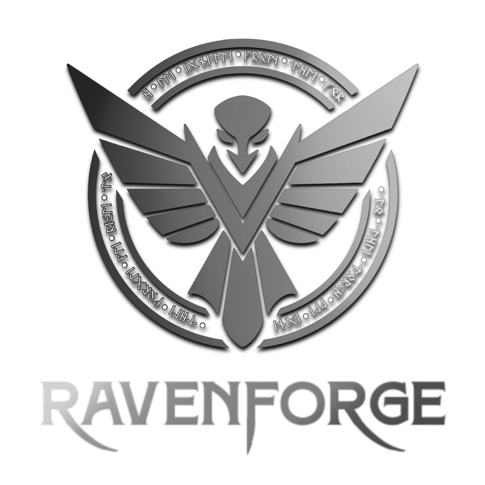
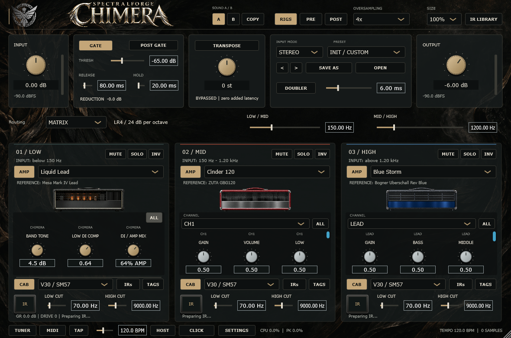
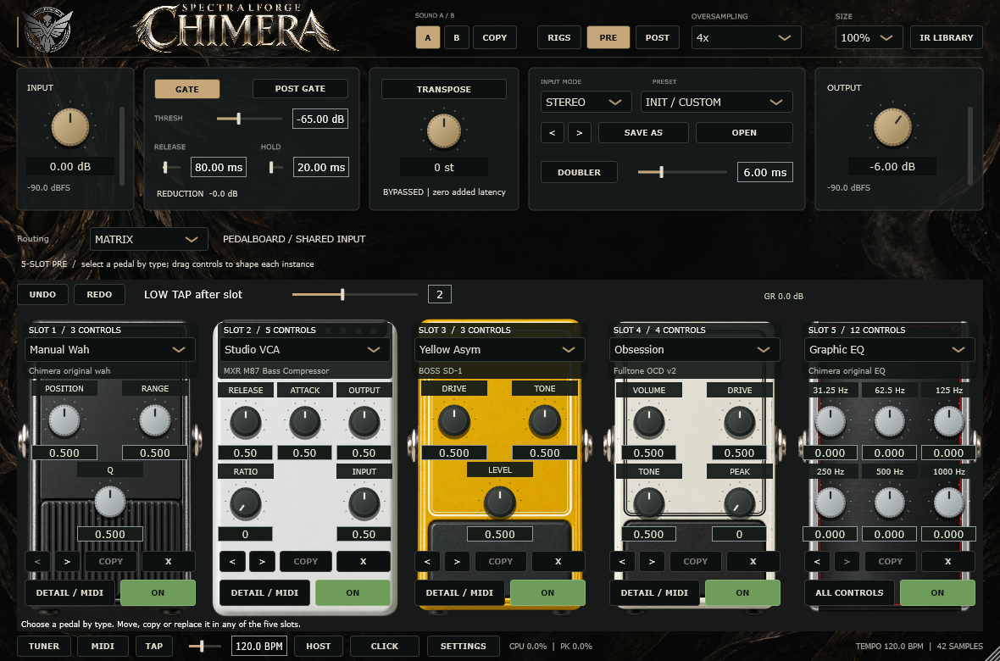
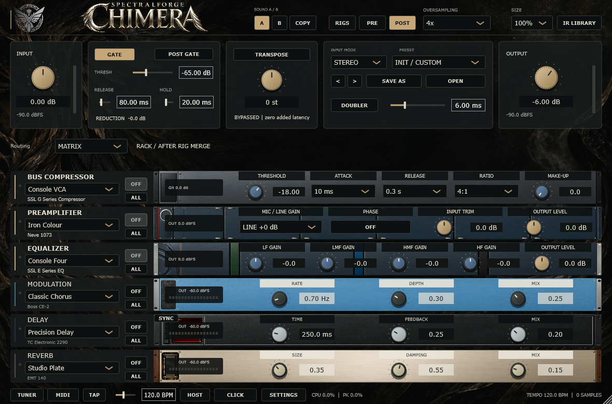

Fenrir
Fast attack and tightly controlled lows. Built for low-tuned palm mutes and closely articulated rhythm.

RAVENFORGE / LUTHIER INTELLIGENCE
Norse stories, material research, and the making of a bass.
Explore the prototypes


RAVENFORGE / CONCEPT LAB
A place for sketches, concept art, and studies of form. Ideas remain open as they develop.
Sketches / Concept art / Form studies
OPEN SKETCHBOOK
No sketches have been published here yet.
Guitar & bass amp and effects suite
Chimera began with an idea: combine the character of different amps across frequency bands to build one guitar or bass tone. From a single amp to a three-band rig, shape the sound around your playing.
Release notes & all downloadsOPEN BETA 1.3 · v1.3.0-beta.1

Niflheimr adds five bass-amp channels and five complete rigs. Shape your tone with 14 speakers, 20 microphones and nine cabinet layouts, including a six-driver bass 6×10. Each Mic A/B path can use the modeled cabinet or a captured IR. Switching the CABINET / IR LOADER view preserves the current sound; selecting an IR changes that microphone path to the chosen capture.
IR-loader images are illustrations based on available metadata, not photographs or records of a capture session. Missing cabinet or microphone details use labelled example images. Artwork does not verify the recording setup or change the IR audio.


From tightly stopped low riffs to abrasive grind and long, spreading sustain. Náströnd is a SpectralForge Original high-gain amp designed for Thall, Slam and Sludge. Five channels offer distinct attack and saturation textures, letting you shape the weight around your playing.

Fast attack and tightly controlled lows. Built for low-tuned palm mutes and closely articulated rhythm.
Forward mids and dense sustain. A voice for leads that carry a melody through long, singing notes.
Coarse grind from asymmetric saturation. Adds a jagged edge and twisted texture to your riffs.
Broad lows and a yielding response. A voice for slow sludge and doom riffs that let each note linger.
A deep low-end hit with a firm attack. Focused on the impact of slam riffs and breakdowns.
Alongside GAIN and EQ, CLANK · CRUSH · IMPACT · ROT · BLOOM shape attack, saturation density, low-end impact and sustain response. Each channel remembers its knob settings as you move between sounds.
Start with Thall Rhythm, Molten Lead, Rotten Grind, Sludge Mass or Slam Impact. These five PRE / amp / cabinet / POST rigs give you starting points to make your own in Classic, Dual and Matrix.
One amp and cabinet for a familiar, full-range signal chain.
Blend two independent rigs, or split the lows and highs between them.
Shape three frequency bands, with a DI/amp blend in the lows and independent mid/high rigs.
PRE / POST effects · Cabinet IR loading · Standalone & DAW plugins
Shape dynamics and drive before the amps, then add texture and space after the rigs are combined.

5 slots · 39 models
Choose from dynamics, filter, gain, modulation, octave and EQ pedals to build a five-slot board.
Compressor · Filter / Wah · Fuzz · Boost · Overdrive · Modulation · Octave · EQ
Select, duplicate and reorder pedals freely within five slots. Model settings, MIDI and A/B states are retained.
Matrix LOW provides a clean low-frequency foundation alongside the mid/high rigs.

6 categories · 21 models
Add weight and texture to the combined rigs with bus compression, preamp colour and EQ, then finish with modulation, delay and reverb for movement and space.
Bus compressor · Preamp · EQ · Modulation · Delay · Reverb
After the rigs are combined, processing follows BUS COMP → PREAMP → EQ → MODULATION → DELAY → REVERB.
Version 1.3.0-beta.1. Choose the installer for your operating system.
Using an earlier beta or preview? Download the installer below and update directly. Close Chimera and all DAWs before installation.
Windows 10/11 · x64
Standalone · VST3
Download installerEXE · x64Portable ZIPmacOS 12+ · Apple Silicon & Intel
Standalone · VST3 · AU
Download installerUniversal PKGDebian / Ubuntu · x86_64 · glibc 2.35+
Standalone · VST3
Download installerDEB · x86_64TAR.GZ archiveReload Factory / Signature presets to apply the new settings. Saved knob, channel and user IR settings are retained, while revised amp DSP can change the tone and level of existing projects.
Windows packages are unsigned. The macOS beta is not Developer ID signed or notarized. Your operating system may display a warning during installation.
The 1.3 manual covers Niflheimr, modeled cabinets, independent Mic A/B paths and captured IR loading.
Copyright © 2026 RavenForge Luthier Intelligence. All rights reserved.
Third-party software and assets are subject to their respective copyright notices and license terms.
Third-party noticesRAVENFORGE / DEVELOPMENT ROADMAP
Quest & Aspiration
What instruments should we build, and what supports those choices? Six quests connect the current design direction with research, unresolved questions and the next validation steps.
Schematic illustrations of structures and relationships—not measured dimensions, response curves or production drawings.
How should each model balance stiffness, mass and adjustability—not simply laminate count?
1Section & geometry2Reinforce & adjust3Neck joint Evidence scopeMaterial literature & model rationale / no linked long-term validationLaminate count or reinforcement alone must not be presented as a guarantee against twisting or dead spots.
Distinguish EDDA’s simpler neck from EMBLA/ASKR laminates. Evaluate section geometry, fingerboard, reinforcement, truss rod and joint as an assembly.
Use repeatable differences with documented conditions to inform decisions. Simplify or defer complexity whose benefit has not been established.
Literature framework for material properties and coupled structure.
EMBLA laminate selection rationale; measurement remains separate.
EDDA’s simpler neck structure and heritage-oriented rationale.
References for comparison, not proof of performance or a claim of partnership.
How can blank condition and sourcing evidence take precedence over a species’ reputation?
1Blank condition2Grain direction3Sourcing record Evidence scopeMaterial & model research / individual stock records to followTreating a species label as proof of mass, stiffness or drying condition obscures the actual design assumptions.
Retain the elm direction for EMBLA, ash for ASKR and alder for EDDA, while assessing each blank separately. Rarity and visual impact are not substitutes for performance evidence.
Use stock when its record supports the fabrication requirements. Defer uncertain material and do not imply sustainability certification without documentation.
Criteria based on properties and structure rather than species labels.
Design and sourcing rationale for elm and fingerboard candidates.
Ash/fingerboard rationale distinguishing observations from experiments.
References for comparison, not proof of performance or a claim of partnership.
Which shapes help with which posture and playing task?
1Posture2Reach3BalanceBased on published EMBLA art · posture, reach & support Evidence scopeL02/L03/L13 literature frameworks / no linked user evaluationA compact body, low mass or asymmetrical neck cannot be assumed comfortable for every player.
Consider strap support, balance, low/high-fret reach, neck profile and control access together. Separate seated/standing use and playing techniques.
Prefer geometry that supports the defined task without hindering others. Stop a test that causes discomfort or pain; do not interpret findings as medical benefits.
L02: literature framework for player-relative geometry.
A framework relating skill, task and available musical actions.
Proposed evaluation of how controls and geometry mediate perception/action.
References for comparison, not proof of performance or a claim of partnership.
How can sound be understandable and repeatable rather than merely feature-rich?
1Pickup loading2Signal path3Reference state Evidence scopeCircuit/supply reviews & test protocols / no linked finished-instrument validationMore controls, higher supply voltage and complex routing do not inherently produce useful voicing or a better playing experience.
Describe each model’s pickup/EQ/filter choices through paths and control states. Distinguish active reference, bypass, power failure and recovery; treat ensemble use as an evaluation task.
Adopt configurations supported by measurable differences, understandable operation and the model’s role. Do not guarantee 18V superiority or circuit transparency before validation.
Design criteria for passive loading, filtering, routing and reference states.
Specification combining signal path, impedance boundaries and control states.
Supply choices are product-specific; documented compatibility is separate from measured effects.
Proposed evaluation of reference-state recognition and recovery.
Measurement protocol for pickup-position comparison, not proxy evidence of results.
References for comparison, not proof of performance or a claim of partnership.
How can a story shape form, material and use rather than remain decoration?
1EMBLA2ASKR3EDDABodies from published art · equal display height, not measured relative size Evidence scopeModel studies & Concept Lab / separate from finished performanceRunes, rare woods and finishes alone can disconnect differentiation from function and model identity.
Translate model narratives into reasons for proportion, curves, colour and material choices. Develop a consistent language without sacrificing playing or service access.
Retain designs that explain their appearance and meet playing, fabrication and service requirements. Judge visual ageing separately from acoustic effects, and rarity separately from performance.
Design rationale linking EMBLA’s narrative and material choices.
ASKR’s character interpreted as system requirements, not a species label.
Heritage for EDDA beyond a single vintage archetype.
References for comparison, not proof of performance or a claim of partnership.
How does a selected specification become a buildable, inspectable and serviceable instrument?
1Drawings & parts2Build & assemble3Inspect & service Evidence scopeConfigurator & development records / fabrication checks remain separateAn option available online is not the same as a configuration checked through measurement, machining and assembly.
Start from the existing configurator and connect options to measured hardware, cavities and wiring. Define how component changes update drawing revisions and inspection criteria together.
Approve builds based on fabrication and inspection evidence, not merely an available UI option. Keep unverified combinations explicitly under review.
Development record including geometry/clearance issues and discarded layouts.
Connects wiring and failure/recovery states to inspectable specifications.
A separate SpectralForge development example: distinguish implementation from verification.
Review compatible options · Configurator (EN) ↗
References for comparison, not proof of performance or a claim of partnership.
RESEARCH / QUEST / INSTRUMENT
Select a quest to reveal its connected research and model applications.
Lines show relationships in public records, not verified performance or completed builds.
RAVENFORGE / WORKING METHOD
Empirical making and iterative prototyping run through every quest. Literature, drawings, observations and measurements stay distinguishable so each revision has a traceable reason.
Feed observations and decisions into the next revision
Record: specimen/revision, comparison conditions, observations/measurements, uncertainty, decision and conditions for review. A planned test is never recorded as a result.
The long-term aim is to grow as a maker who translates a player’s musical narrative into form, material and sound. Respect for established builders should lead to learning, practical work and trusted collaboration, while developing an independent design language. The twenty-year vision remains; the next step starts with one build and one accountable decision.